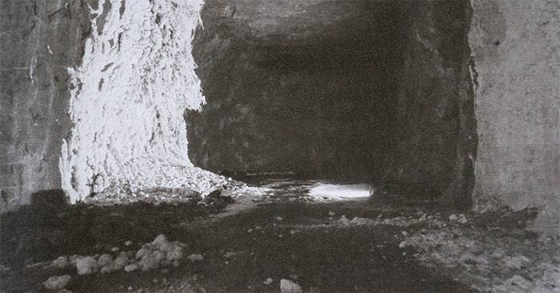

Designer no Lilo.Zone
O Lilo.Zone é um ateliê compartilhado de uso criativo de tecnologia com intersecções entre tecnologia, design e arte.
O princípio é o de fomentar experiências lúdicas e acessíveis com a tecnologia como foco. As atividades são voltadas para eletrônica criativa, mapping e tecnologia audiovisual, educação maker, modelagem e parametria, biohacking, arquitetura de informação, internet das coisas, wearables, realidade virtual e interatividade, prototipagem, fabricação digital, artes e inovação.
Como designer responsável, sou responsável pela concepção da comunicação visual do espaço e também das iniciativas sócias:
Lilo.Think,
Betakit,
Maumaker e
Biolilolab,
entre outras ações pontuais.
Diretora de arte Arte Integrada
Arte Integrada, uma empresa de formação continuada em arte que tem como meta apoiar e promover a inclusão e efetivação das artes visuais, musicais, cênicas e integradas no currículo das redes de ensino públicas e particulares do Brasil.
A Arte Integrada nasceu de nosso constante esforço pela permanência da Arte no currículo da Educação Básica e, também, de nossa constante contribuição para um ensino de Arte pós-moderno e adequado às orientações governamentais, tanto em escolas como em espaços culturais.
Atuamos em três linhas de ação: oferecemos formação de Professores de Arte, de acordo com as mais recentes pesquisas acadêmicas da Arte/educação e de acordo com a Base Nacional Comum Curricular (BNCC); elaboramos de ações e materiais educativos para espaços e instituições culturais e oferecemos cursos preparatórios para concursos públicos dirigidos a professores de Arte.
Como diretora de arte, fui responsável pela ideação, elaboração, criação, implementação e coordenação visual do material da empresa, incluindo a plataforma EAD, os videos dos cursos, o material didático e o site.
Diretora de arte na zucchini
A Zucchini produz materiais de conteúdo maker no intuito de fortalecer o movimento do faça você mesmo.
Ela se multiplica em três linhas de atuação: a
zucchini.press oferece editoração, publicação e comercialização de conteúdo maker;
a zucchini.tv veicula conteúdo audiovisual sobre design, educação, prototipagem, tecnologia e inovação; e a zucchini.radio traz podcasts sobre o tema.
Como a designer responsável pela concepção do projeto, desenvolvi a identidade visual da iniciativa, os layouts editoriais e as vinhetas.
Coordenadora do coletivo colabmov

O coletivo colabMOV promove a experimentação e a reflexão sobre as questões da representação visual a partir de oficinas colaborativas de modelo vivo.
Propomos a abordagem de temas relevantes para o desenvolvimento da pesquisa pictórica-corporal, criando uma vivência e reflexão acerca de técnicas de desenho do corpo humano, promovendo um debate a respeito da visualidade dos corpos na cultura visual de nossa sociedade.
Diretora de arte no Programa CPLP Audiovisual

O Programa CPLP Audiovisual tem como objetivo implantar políticas públicas integradas de fomento à produção audiovisual nos países que falam português
O Programa CPLP Audiovisual teve por objetivo fomentar a produção e a teledifusão de conteúdos audiovisuais nos estados membros da Comunidade dos Países de Língua Portuguesa, através da realização de concursos nacionais de seleção de projetos de documentários e telefilmes de ficção em Angola, Brasil, Cabo Verde, Guiné-Bissau, Guiné Equatorial, Moçambique, Portugal, São Tomé e Príncipe e Timor-Leste.
Fui responsável por elaborar a identidade gráfica de toda a comunicação oficial da edição 2015/2016 do Programa, incluindo divulgação de convocatórias do concurso, comunicação de resultados, elaboração do website, diagramação de brochuras sobre os conteúdos do programa, banners, convites, peças de divulgação dos filmes nas redes sociais, sies e meios impressos de comunicação, entre outras peças gráficas.
O projeto Wikitransporte foi realizado dentro do laboratório internacional de inovação cidadã Ciudades que Aprenden, ocorrido na Cidade do México em novembro de 2016.
Ciudades que Aprenden é uma iniciativa do Tecnológico de Monterrey para promover a inovação cidadã. Baseia-se na premissa que diante da complexidade de nossa realidade, são necessárias visões alternativas que colocam o humano no centro e que propõem maneiras diferentes de abordar o que nos acontece, que nos ajudam a conviver sob o princípio do cuidado e do afeto.
O objetivo do projeto Wikitransporte era dar visibilidade as histórias dos usuários das peseras, microônibus informais que circulam pela cidade. 60% da população usa este meio de transporte diariamente, enfrentando a super lotação, a má qualidade dos microonibus e a falta de treinamento dos motoristas para chegar ao trabalho.
Desenvolvemos cartazes que convidavam a população a enviar suas experiências neste modal de transporte, e colamos-os no entorno do Terminal Quatro Caminos, o mais movimentado da cidade.
Promotor Ernesto Priani (Mx) Mediador Juan Dorado (Mx)
Integrantes Brenda Espindula da Fraga (Br), Lidia Ganhito (Br), Francisco Javier Escalante (Mx), Edgar Cajero (Mx), Valessio Brito (Br), Mauricio Sosa (Mx), Carlos Ponce (Mx)
Identidade visual e edição de vídeo Lídia Ganhito
Edição de som Gabriel Edé
CAVA COVA é uma publicação online semestral reúne obras de jovens artistas emergentes que atuam prioritariamente em São Paulo e Campinas.
Sou editora e diretora de arte da publicação CAVA COVA, que procura incluir trabalhos que refletem criticamente sobre a produção artística, literária, e musical contemporânea, tecendo suas considerações no interior do próprio fazer artístico.
CAVA COVA insere-se na tradição das revistas de invenção: revistas de tiragem reduzida, geralmente associadas a movimentos de vanguardas artísticas e que reúnem em seu corpo conteúdo literário e visual intimamente ligados por uma concepção estética que assume a necessidade de integração material entre palavra e artes visuais como imperativo. Frequentemente as revistas de invenção assumem um tom manifestário, revelando assim sua vocação eminentemente política.
A Cia Teatro do Perverto se debruça na pesquisa sobre psicopatologias sociais, violência sistêmica e ação política, com um teatro que trabalha elementos da farsa e de hiper-teatralidade na encenação.
A Cia Teatro do Perverto se debruça na pesquisa sobre psicopatologias sociais, violência sistêmica e ação política, com um teatro que trabalha elementos da farsa e de hiper-teatralidade na encenação. A pesquisa da companhia se baseia na ideia de que a sociedade em que vivemos é uma sociedade fundamentalmente perversa, violenta e desigual.
Para além, os textos, encenações e atuações farsescas dos espetáculos da companhia - que fazem um pastiche dos recursos melodramáticos presentes na indústria cultural - tentam dar conta das anomias sociais a partir de uma forma que incorpore a incompletude, o nonsense, a incoerência, a contradição, sugerindo a utilização da comédia e do humor como veículos de apreensão do drama humano muitas vezes mais poderosos do que a tragédia ou o próprio drama.
Participei como diretora de arte do processo de concepção e montagem de duas peças da companhia: A Demência dos Touros (2017) e Roda Morta (2018), sendo responsável tanto pela concepção de cena quanto da comunicação visual das peças.

Selo independente de publicação de arte impressa

Sete Martes é um selo independente de publicação de arte impressa nascido do desejo de jogar para o mundo os labirintos visuais criados por mim, Gabriel Edé e Mariana Pougy. A partir da manipulação e da distorção de imagens, convidamos o observador a navegar por limites abissais e traçar suas próprias constelações.
O Antessala das Letras foi uma plataforma destinada a publicar o trabalho autores e ilustradores em começo de carreira, valendo-se da recomendação de autores consagrados para impulsionar a produção destes autores.
A iniciativa nasceu da junção das inquietações de Felipe Munhoz, escritor às voltas com seu primeiro romance, e eu, na época no quinto ano da faculdade de artes visuais. Ele me narrou a dificuldade que as pessoas que estão iniciando na carreira literária tem de divulgar os seus trabalhos e eu percebia a mesma dificuldade nas artes visuais. Sentimos que faltavam espaços mais abertos para publicação e entendemos que poderíamos criar uma iniciativa independente que pudesse servir como uma catapulta para ajudar o tão complexo início de carreira dos escritores e ilustradores.
O Antessala das Letras se tornou então esta plataforma para publicação de textos de escritores em início de carreira. Entre 2014 e 2016, foram publicados 52 textos acompanhados de ilustrações inéditas.
PhD cria suportes de vestir e oferece para artistas contemporâneos aplicarem seus trabalhos, pensando que a sua arte não será mais estática e ganhará as ruas pelos corpos e pelas interpretações dos usuários.
Entre 2013 e 2018, fui uma das artistas da Phd - Galeria de Arte para Vestir, criando peças únicas a partir de minhas fotografias.
Todas as peças saem da PhD em edições limitadas e numeradas com o nome do artista e o título da arte garantindo a exclusividade e autenticidade a quem está vestindo.